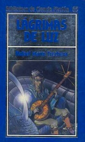

En 1985, con una gran campaña mediática que incluía anuncios en televisión y en prensa, la Editorial Orbis lanza al mercado la colección Biblioteca Orbis de ciencia ficción que se distribuye fundamentalmente en quioscos. El lanzamiento de la colección se realizó en septiembre y se promocionó con los dos primeros títulos vendidos en un solo pack: “El fin de la Eternidad” y “2001 una odisea espacial”.
Como asesor literario de la colección se eligió a Domingo Santos que hizo una buena labor derecopilación. Los libros tenían un precio muy asequible y se presentaban en color azul con una portada que incluía una foto o dibujo en color dentro de un recuadro. En muchas ocasiones se usaron fotogramas de las películas correspondientes al título. Las grafías del título de cada obra fueron en color, también azul, contrastando con el plateado del fondo de la mitad superior del recuadro inscrito. El tamaño era de 220×122 mm., y el acabado en rústica con un papel de baja calidad que amarilleaba enseguida.
Sin duda, los títulos contemplados en la colección consiguieron atraer a un buen número de aficionados. Era una colección en la que estaba prácticamente todo lo mejor de la producción mundial en literatura de ciencia ficción. Autores tan conocidos, y reconocidos, como Asimov, Bradbury, Brown, Clarke, Dick, Heinlein, Niveno o Siverberg tuvieron cabida en la centena de títulos publicados. Algunos de los clásicos indiscutibles fueron incluidos en la obra como Fahrenheit 451 oUn mundo feliz y también se incluyeron antologías muy destacables; Visiones peligrosas, la recopilación de Harlan Ellison que fue una revolución en su época, pero que llegó demasiado tarde a nuestro país, Lo mejor de la ciencia ficción soviética, La edad de oro de la ciencia ficción, recopilada por Isaac Asimov o Los mejores relatos de ciencia ficción: La era Campbell.
La Biblioteca Orbis se nutrió fundamentalmente de obras ya editadas anteriormente en dos colecciones como fueron la de Acervo y la de Martínez Roca, con algún título aparte que completó la misma. Ese fue el caso de la inclusión de autores castellanos dentro de los títulos. Entre éstos últimos, estuvieron el propio Domingo Santos, con su novela No lejos de la tierra, Manuel de Pedrolo, Mecanoescrito del segundo origen, Rafael Marín, Lágrimas de luz o Gabriel Bermúdez Castillo, El Señor de la rueda entre otros.
La colección tuvo mucho éxito a lo largo de sus dos años y medio de vigencia de la primera edición, porque hubo una segunda edición y hasta una tercera edición que comenzó en 1986 desde el número uno. Argentina, bajo la editorial Orbis Hyspamérica, editó toda la colección desde el número uno con idénticas características generales, aunque con mejor papel.